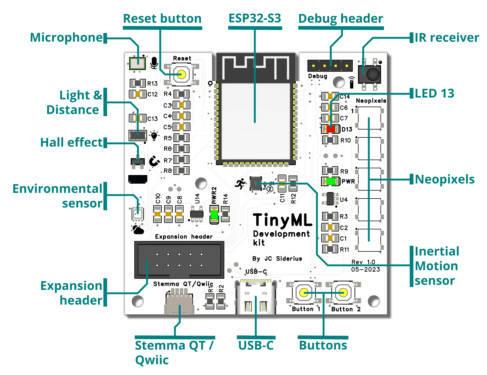
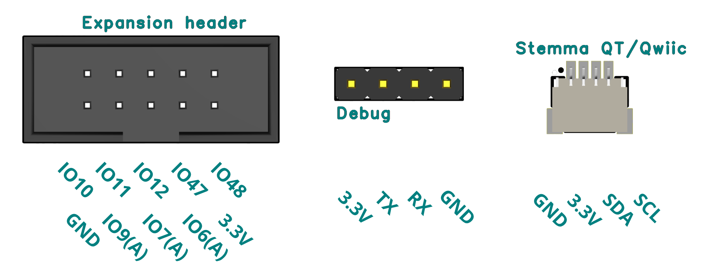

TinySpark Development kit
The TinySpark Development kit is a development board specifically tailored to the exploration of TinyML concepts and to test possible applications of TinyML in an easy way. It is based on the popular ESP32-S3 chipset, which is perfect for TinyML applications, because of its fast processor speed and large storage. Additionally it has Bluetooth 5 and WiFi capabilities, making it easy to share sensor data and warn users in case of detections or errors. You can learn more about this chip in its datasheet. The full electronic schematic of the TinyML development kit is available here.

The TinyML Development kit contains a selection of sensors which enable direct measurements without needing extra hardware, as well as expansion options to adapt the development kit to your specific projects.
The Development kit contains the following sensors and I/O:
- Inertial motion sensor: this sensor measures both the angular motion using a gyroscope, as well as the acceleration using an accelerometer. The datasheet for the LSM6DS3TR-C sensor can be found here. A template code project for using this sensor can be found here.
- Microphone: this sensor measures the amplitude and pitch of sound. The datasheet for the ICS-43434 microphone can be found here.
- Light and Distance sensor: this sensor measures the ambient light level, as well as short-range distance. The datasheet for the APDS-9930 sensor can be found here. A template code project for using this sensor can be found here.
- Hall effect sensor: this sensor measures the magnetic field around it's axis. The datasheet for the AH-49E sensor can be found here. A template code project for using this sensor can be found here.
- Environmental sensor: this sensor measures multiple environmental parameters; temperature, relative humidity as well as atmospheric pressure. The datasheet for the BME-280 sensor can be found here. A template code project for using this sensor can be found here.
- Infrared receiver: this sensor receives infrared signals, for example from a remote control. The datasheet for the IRM-H638T-TR2 receiver can be found here.
- Buttons: two buttons are accessible to the user (Button 1 and Button 2), which can be configured for a multitude of uses. The last button (Reset) is used if the board needs to be debugged, or if you want to restart your board and your application. A template code project for using the buttons can be found here.
- Output LED: this Red LED can be used as a simple output, for example to quickly see if your sensor functions correctly. It is connected to the default LED pin, D13. A template code project for using the output LED can be found here.
- Neopixel LEDs: the Neopixel LEDs can be used to output application specific information, and since they can be programmed to (individually) display every RGB colour imaginable, you can use them to output loads of useful information. The datasheet for the WS2812B programmable RGB LEDs can be found here. A template code project for using the Neopixels can be found here.
- USB-C connector: this connector is used for the main connection to power and program the board. It can be connected using the included USB-C to USB-A cable.
- Stemma QT / Qwiic connector: this connector can be used to connect extra sensors to adapt to your specific projects. The connector enables connection to sensors and actuators using the popular Adafruit Stemma QT or Sparkfun Qwiic standards. A template code project for using the Stemma QT / Qwiic connector with an external sensor can be found here.
- Expansion header: this connector can be used to connect extra peripherals, sensors and actuators to adapt to your specific projects. The connector features power, ground, digital and analog connections, giving you the freedom to connect anything you can think off.
The TinyML development kit also contains some miscellaneous other components such as two green LEDs (for showing power), a Debug header (used to initially program and test the development kit) and some passive components such as resistors and capacitors.
Sensor addresses
Due to the nature of connections to the sensors on the TinySpark development board, the address on which they are reachable might be different depending on the board you have. Each sensor can be configured for a different address in software, to remedy this issue.
The environmental sensor defaults to: address=0x76, however it might also be on address=0x77.
The light and distance sensor defaults to address=0x39, this is the only possible address.
The inertial motion sensor defaults to address=0x6b, however it might also be on address=0x6a.
Microphone use
Due to driver issues in CircuitPython, it is currently not possible to access the microphone data using this programming language. The microphone is still usable in other programming languages such as Arduino and the ESP-IDF. Please see the examples in the given links.
There are multiple output pins on the TinyML development board. The specific pinouts are shown in the image below. A template code project for using the expansion pins can be found here.

The Stemma QT / Qwiic connector uses a different I2C communication bus as the main sensors on the board (on board uses I2C1, Stemma QT / Qwiic uses I2C2). Please see information below to connect sensors to the Stemma QT / Qwiic connector.
Secondary I2C bus
To connect external sensors to the Stemma QT / Qwiic connector, a new (secondary) I2C bus needs to be initialised. This I2C2-bus is connected to the following pins: SDA2=GPIO17 SCL2=GPIO16.
To start the secondary I2C bus, use the template project below.

In the next section, programming the TinyML Development kit will be explained.